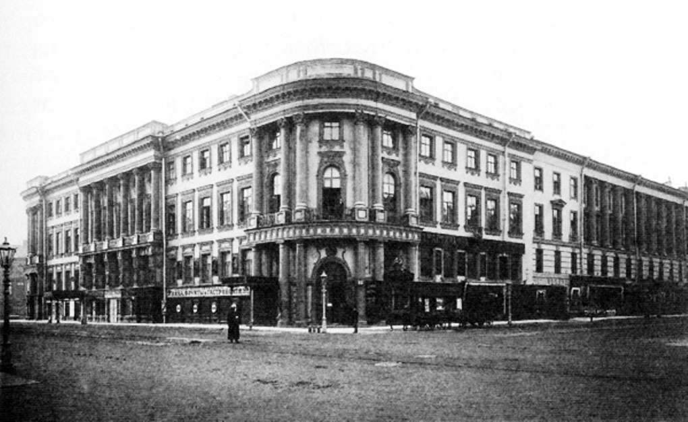

Дом-коммуна
Дом-коммуна — яркое архитектурное и социальное явление 1920-х — начала 1930-х годов, ставшее воплощением пролетарской идеи «обобществления быта», одно из проявлений эпохи конструктивизма.
Дореволюционные «фаланстеры»
Идея социалистов-утопистов о создании «нового массового человека» привела их, и прежде всего Фурье, к созданию концепции «фаланстера» — новой формы жилья, где люди смогли бы приучиться к коллективизму, освободились бы от тягот домашнего труда, семейных уз и всего мелкого и частного
В России идея «фаланстера» приобрела особую популярность после выхода романа Н. Г. Чернышевского «Что делать?», главная героиня которого Вера Павловна в своём четвёртом сне видит обитателей фаланстера.
Среди поддержавших эту идею и попытавшихся воплотить её в жизнь были молодые художники во главе с И. Н. Крамским, снявшие сообща квартиру вначале на 17-й линии Васильевского острова, а затем на Вознесенском проспекте в Санкт-Петербурге:
"…в этом общежитии выигрывалась масса времени, так бесполезно растрачиваемого жизнью в одиночку. Что мог иметь каждый из этих бедных художников один, сам по себе? Какую-нибудь затхлую, плохо меблированную комнату с озлобленной на весь мир хозяйкой. Скверный обед в кухмистерской, разводитель катаров желудка, желчного настроения и ненависти ко всему… А здесь, в артели, соединившись в одну семью, эти самые люди жили в наилучших условиях света, тепла и образовательных пособий." И. Е. Репин
В 1863 году на Знаменской улице в Петербурге вдохновлённый идеями Фурье литератор В. А. Слепцов организовал так называемую Знаменскую коммуну, просуществовавшую недолго, поскольку, по признанию одной из её обитательниц, «…женщины того времени обнаруживали отвращение к хозяйству и простому труду, перед которым они в теории преклонялись.» В глубинке коммуной стали пугать мамаш:
"В ней… вербовали всех молодых девушек, желающих покинуть родительский дом. Молодые люди жили в ней при полнейшем коммунизме. Прислуги в ней не полагалось, и благороднейшие девицы-дворянки собственноручно мыли полы и чистили самовары." С. В. Ковалевская
Ещё ужаснее в глазах современников выглядел фаланстер в Эртелевом переулке:
"Коммуна занимала маленькую комнатку, и её членами состояли В[оскресенский], С[ергиевский], С[оболев], князь Ч[еркезов] и В[олков], и тут же пребывали две нигилистки, К[оведяева]-В[оронцова] и Т[имофеева], и все они спали вповалку… Подойдя к столу, [я] увидал такую массу грязи, что мне, хоть и непривыкшему к комфорту и порядку, и то показалось чересчур неприятно." Н. И. Свешников
К концу XIX века стало ясно, что освобождать человека от бытовых обязанностей можно иначе — развернув сферу услуг (прачечных, общепита и т. д.).
Построение нового быта
Идея фаланстера была близка идеологам Октябрьской революции. Ленинский черновой набросок проекта «О реквизировании квартир богатых для облегчения нужд бедных» содержит мысль о принципиальной невозможности и ненужности отдельного жилья для каждого человека, даже в виде отдельной комнаты. Тем более, что на тот момент существовал и некий прообраз домов-коммун — рабочие казармы.
Дома Совета
С октября 1917 года большевистские руководители организовали в Смольном не только штаб революции, но и свой быт. В здании размещались жилые квартиры и комнаты, библиотека, музыкальная школа, ясли, баня, столовая; здесь проживало около 600 человек, которых обслуживало более 1000 рабочих и служащих. Одними из первых разработку проектов здания «нового типа» — домов-коммун, домов Совета, Совдепов — начали в 1919 году архитекторы-члены Живскульптарха.
В Москве и Петрограде появляются т. н. «дома Совета». В Москве под первое такое общежитие-коммуну переоборудовали гостиницу «Националь», в Петрограде 1-м Домом Совета стала гостиница «Астория», а 2-м — «Европейская». Это были по сути общежития с отдельными комнатами, общей столовой и общими кухнями для проживания совслужащих по ордерам. Проживание и питание в таких домах Совета были бесплатными.
В период разрухи и голода 1918—1922 годов определённую заботу власть проявляла и о деятелях культуры, размещая их в подобных коммунах: Доме литераторов на Бассейной улице и Доме искусств (ДИСК) в особняке банкира С. П. Елисеева на Невском проспекте, куда
"…перебрались бездомные литераторы. Они без сожаления покинули свои нетопленные жилища. Петрокоммуна снабдила елисеевский дом всем необходимым для жизни." Вс. Рождественский
По словам К. И. Ротикова, ДИСК «был первым опытом перевоспитания интеллигенции путём подкормки».
Дома Совета и подобные учреждения прекратили своё существование после специального декрета ВЦИК и СНК РСФСР от 12 сентября 1923 года. Гостиницы вернулись к выполнению привычных функций, а советская номенклатура перебралась в отдельные квартиры.
Молодёжные коммуны
В 1920-е годы идею фаланстеров подхватил комсомол. В октябре 1920 года III съезд РКСМ предложил «в целях рационального улучшения положения… рабочей молодёжи в жилищном отношении… государственное декретирование домов-коммун рабочей молодёжи». Газета «Северный комсомолец» 2 марта 1924 года писала:
Молодёжь скорее, чем кто-либо должна и может покончить с традициями отмирающего общества... Пролетарский коллективизм молодёжи может привиться только тогда, когда и труд, и жизнь молодёжи будут коллективными. Лучшим проводником такого коллективизма могут явиться общежития-коммуны рабочей молодёжи. Общая коммунальная столовая, общность условий жизни - вот то, что необходимо прежде всего для воспитания нового человека.
Обобществление понималось на современный взгляд весьма своеобразно:
оловой вопрос просто разрешить в коммунах молодёжи. Мы живём с нашими девушками гораздо лучше, чем идеальные братья и сёстры. О женитьбе мы не думаем, потому что слишком заняты, и к тому же совместная жизнь с нашими девушками ослабляет наши половые желания. Мы не чувствуем половых различий. В коммуне девушка, вступающая в половую связь, не отвлекается от общественной жизни.
Партийные деятели всецело поддерживали молодёжный коммунарский задор, считая, что коммуна —
"...это организация на почве обобществления быта новых общественных отношений, новых взаимоотношений между членами коммуны, новых... товарищеских отношений между мужчиной и женщиной." Н. К. Крупская
Общежития-коммуны создавались как при различных предприятиях и учебных заведениях, так и стихийно — самими молодыми людьми, вдохновлёнными идеями обобществления быта и разрушения патриархальной семьи. Чаще всего они размещались в квартирах старых доходных домов, а то и в вовсе не приспособленных помещениях — старых казармах, заводских помещениях, кельях (напр., Александро-Невской лавры). Вера Панова вспоминала о своих друзьях, которые объявили себя коммунарами и «поселились в ванной комнате какой-то коммунальной квартиры, один спал на подоконнике, двое на полу, лучшим ложем, занимаемым по очереди, была ванна».
Во многих случаях, в особенности в коммунах рабочей молодёжи, создававшихся на ленинградских фабриках и заводах, быт обобществлялся полностью, и прежде всего в плане финансов: от 40 до 100 % заработка обобществлялось, и коммунары получали из «общака» деньги на обеды, трамвайные билеты, табак. Из общих денег выписывались газеты, отчислялась оплата за баню и кино, платились алименты. Без разрешения коллектива нельзя было покупать вещи.
Официально такие коммуны просуществовали до XVII съезда ВКП(б) (1934), признавшего, что это были «уравниловско-мальчишеские упражнения левых головотяпов».
Борьба за улучшение быта молодёжи привела к строительству специальных общежитий и целых городков, ярким примером которых является студенческий городок Политехнического института на Лесном проспекте в Санкт-Петербурге.
Новый тип жилища
В конце 1920-х годов на фоне свёртывания нэпа возродилась дискуссия о новых типах рабочих жилищ, главным из которых понимался дом-коммуна. Участники дискуссии были убеждены в том, что новый быт в старых архитектурных пространствах строить невозможно. В 1926 году был организован конкурс архитектурных проектов, организаторы которого поставили перед участниками задачу:
…проникнуться новыми запросами к жилищу и… дать проект такого дома с общественным хозяйством, который превратил бы так называемый жилищный очаг из тесной, скучной, а подчас и тяжёлой колеи для женщины в место приятного отдыха.
В годы первой пятилетки, с появлением на улицах первых конструктивистских построек, стали вырастать и новые жилые дома-коммуны. Возведение домов-коммун регулировалось «Типовым положением о доме-коммуне» Центржилсоюза (1928), который предписывал коммунарам при вселении отказаться от накопленных предыдущими поколениями мебели и предметов быта и предполагал коллективное воспитание детей, стирку, уборку, приготовление еды и удовлетворение культурных потребностей.

Часть архитекторов реализовывала эту концепцию в едином архитектурном объёме, объединявшем индивидуальные квартиры и коммунальные учреждения — по такому принципу были возведены дом-коммуна архитектора Николаева и Дом Наркомфина в Москве, Дом-коммуна инженеров и писателей, Дом политкаторжан, Бабуринский, Батенинский и Кондратьевский жилмассивы в Ленинграде. В квартирах на одну-две семьи предусматривались умывальники, кухни (или шкафы-кухни для разогрева пищи, доставлявшейся в термосах из фабрик-кухонь) и ватерклозеты, а банно-прачечные процедуры осуществлялись либо в ванно-душевых комплексах на несколько квартир, либо в банях и прачечных, входивших в состав комплекса.
Известная обитательница одного из построенных тогда домов-коммун вспоминала:
"Его официальное название — «Дом-коммуна инженеров и писателей». А потом появилось шуточное, но довольно популярное в Ленинграде прозвище — «Слеза социализма». Нас же, его инициаторов и жильцов, повсеместно величали «слезинцами». Мы, группа молодых (очень молодых!) инженеров и писателей, на паях выстроили его в самом начале 30-х гг. в порядке категорической борьбы со «старым бытом»… Мы вселились в наш дом с энтузиазмом… и даже архи непривлекательный внешний вид «под Корбюзье» с массой высоких крохотных клеток-балкончиков не смущал нас: крайняя убогость его архитектуры казалась нам какой-то особой строгостью, соответствующей времени… Звукопроницаемость же в доме была такой идеальной, что если внизу, на третьем этаже… играли в блошки или читали стихи, у меня на пятом уже было всё слышно вплоть до плохих рифм. Это слишком тесное вынужденное общение друг с другом в невероятно маленьких комнатках-конурках очень раздражало и утомляло." О. Ф. Берггольц
Некоторые архитекторы доводили идею коммуны до абсурда. Н. С. Кузьмин планировал в домах-коммунах общие спальни на шесть человек и «двуспальни» («кабины для ночлега»), где смогли бы по особому расписанию на законных основаниях уединяться супружеские пары. Этот проект по настоянию Ю. Ларина пытались реализовать на строительстве Сталинградского тракторного завода. Сами коммунары потом писали:
Позднее, когда мы лучше познакомились друг с другом, пожили буднями, мы увидели, какие мы разные люди, и как калечилась инициатива ребят из-за скороспелого желания быть стопроцентными коммунарами.
Практика домов-коммун была осуждена специальным постановлением ЦК ВКП(б) от 16 мая 1930 года «О работе по перестройке быта», где, в частности, говорилось:
ЦК отмечает, что наряду с ростом движения за социалистический быт имеют место крайне необоснованные, полуфантастические, а поэтому чрезвычайно вредные попытки отдельных товарищей (Сабсович, отчасти Ларин и др.) «одним прыжком» перескочить через те преграды на пути к социалистическому переустройству быта, которые коренятся, с одной стороны, в экономической и культурной отсталости страны, а с другой — в необходимости в данный момент максимального сосредоточения всех ресурсов на быстрейшей индустриализации страны, которая только и создает действительные материальные предпосылки для коренной переделки быта. К таким попыткам некоторых работников, скрывающих под «левой фразой» свою оппортунистическую сущность, относятся появившиеся в последнее время в печати проекты перепланировки существующих городов и перестройки новых исключительно за счет государства, с немедленным и полным обобществлением всех сторон быта трудящихся: питания, жилья, воспитания детей с отделением их от родителей, с устранением бытовых связей членов семьи и административным запретом индивидуального приготовления пищи и др. Проведение этих вредных утопических начинаний, не учитывающих материальных ресурсов страны и степени подготовленности населения, привело бы к громадной растрате средств и жестокой дискредитации самой идеи социалистического переустройства быта.
Вкупе с позицией XVII съезда, казалось бы, практика домов-коммун должна была кануть в Лету. Но в 1934 году Общество бывших политкаторжан и ссыльнопоселенцев строит в Ленинграде дом-коммуну на 200 квартир со столовой, клубным залом, читальней, детским садом, амбулаторией и стационаром, аптекой, гаражом и т. п. Ёмкость квартир определялась из расчёта один человек на комнату. Однако большинство поселившихся в возведённом Доме политкаторжан вскоре подверглись репрессиям, а сам дом, как и большинство других, был реконструирован.
Наследие домов-коммун
Те немногие дома-комунны, которые были изначально выстроены для этой цели, потребовали серьезной реконструкции для дальнейшего использования даже в качестве студенческих или рабочих общежитий. Парадоксальным образом принципы планирования комунн отразились в современных хостелах, где присутствуют общие спальни, кухни, холлы, но пары могут временно уединяться в отдельных помещениях. Однако хостелы предназначены для временного проживания и хотя "постоянные" жильцы часто присутствуют, но число их невелико.
Вопрос о влиянии домов-комунн на северокорейские дома-"гармоники" является дискуссионным.